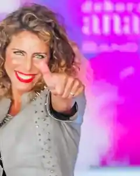

01 / CERIMONIE
Momenti da ricordare
Un percorso musicale pensato per sottolineare i passaggi più intensi della giornata.
Una direzione visiva riconoscibile e un racconto coerente, dal primo video che incuriosisce fino al sito che trasforma l'interesse in una richiesta.

DEBORAH ANASTASIOLe piattaforme non devono sembrare tre copie dello stesso contenuto. Ognuna ha un compito preciso nel percorso del pubblico.
Rendere riconoscibile uno stile, raccontare i momenti e presentare un portfolio coerente.
Esplora la simulazione ↗Una narrazione video più immediata, costruita su emozioni, voce e retroscena.
Esplora la simulazione ↗Un punto di arrivo autorevole, con musica, proposte artistiche e un contatto chiaro.
Esplora la simulazione ↗Accanto alla voce di Deborah, la Deborah Anastasio Band ha una firma riconoscibile: DAB. Un progetto collettivo con il proprio spazio visivo e musicale.
Scopri DAB nel sito ↗«Un racconto elegante, personale e vivo. La stessa artista, riconoscibile in ogni punto di contatto.»
Bio leggibile, storie in evidenza organizzate e copertine coordinate. Apri una storia o un post per vedere l'idea editoriale.
Il profilo deve far capire in pochi secondi chi è Deborah, cosa comunica e come contattarla.
Apri il profilo reale ↗La musica dei momenti che restano ✦
Live · DAB · Cerimonie · Eventi
Napoli ♡
Un feed dimostrativo con cinque storyboard. Usa le frecce per scorrere i format proposti, come in un profilo video.
Portare lo spettatore dentro il momento, dare un volto alla voce e creare curiosità.
Apri il profilo reale ↗
Un momento speciale merita una colonna sonora capace di restare. #musicalive #cerimonia
♫ Audio da inserire · Storyboard concept
Una storia musicale da raccontare. E una band con cui condividere il palco.
DAB · La band ↘La voce accompagna un momento, lo interpreta e gli dà carattere. Qui prende forma un'identità costruita attorno alla sensibilità musicale e all'incontro con il pubblico.
Questa presentazione è una proposta di copy e direzione creativa, da personalizzare insieme a Deborah con la sua storia, il suo repertorio e i suoi materiali autentici.
Conosci Deborah su Instagram ↗DAB è la Deborah Anastasio Band. Il progetto musicale collettivo merita una presenza propria.
In questa sezione troveranno spazio esibizioni, musicisti, repertorio e storia della band. Nomi, formazioni, date e materiali saranno inseriti soltanto dopo verifica con Deborah.
Informazioni e contatti ↗Marchio tipografico e testi ancora in versione concept.Un percorso musicale pensato per sottolineare i passaggi più intensi della giornata.

Musica che dialoga con chi ascolta, dal primo brano fino all'ultimo applauso.

Un'identità sonora da immaginare insieme, coerente con il contesto e le persone.
Categorie e descrizioni esemplificative: servizi, formazioni musicali e disponibilità sono da confermare con l'artista.
«Le canzoni finiscono.TESTO CREATIVO DIMOSTRATIVO, NON CITAZIONE ATTRIBUITA A DEBORAH
Le emozioni rimangono.»
Una richiesta semplice, un primo contatto diretto. Nella versione finale qui ci sarà il sistema di disponibilità concordato con l'artista.
TikTok ↗